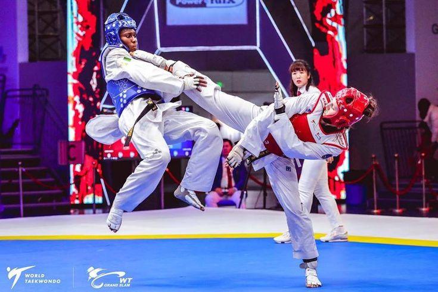
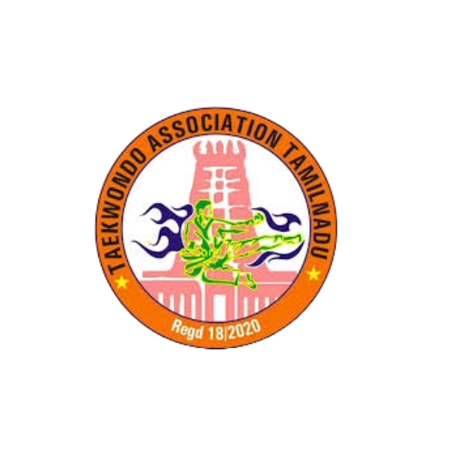
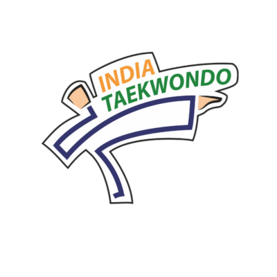
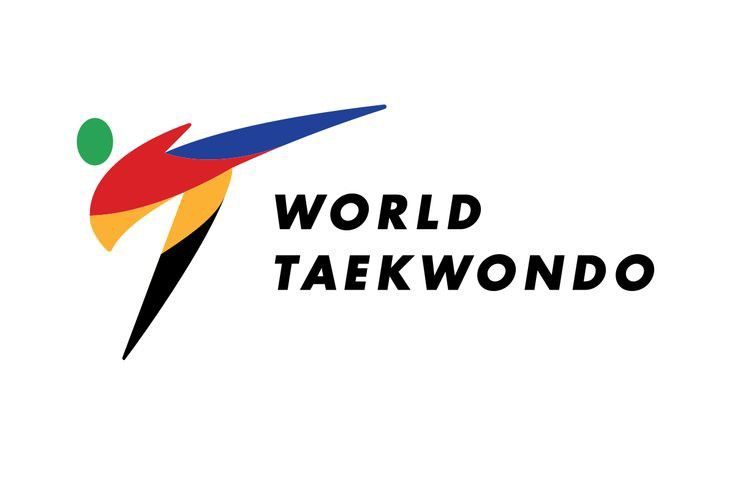
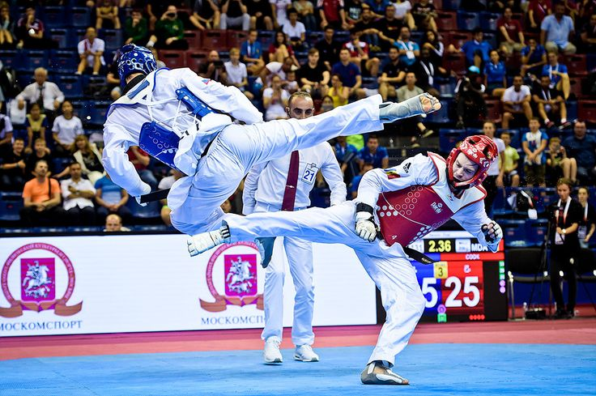
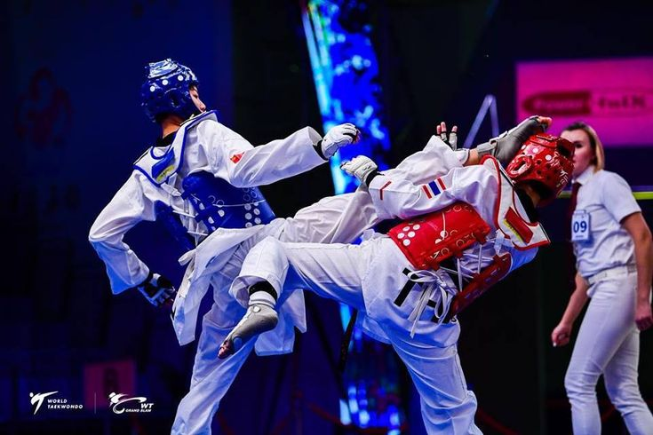
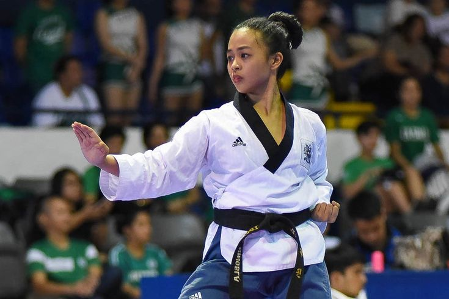
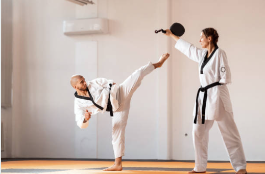

☰
Taekwondo is a dynamic Korean martial art known for its powerful kicks, swift strikes, and defensive techniques. The name “Taekwondo” is derived from three Korean words: “Tae” meaning foot or kick, “Kwon” meaning fist or hand, and “Do” meaning way or discipline. It emphasizes high-speed techniques, flexibility, and agility in both self-defense and competition. Recognized as an Olympic sport, Taekwondo promotes discipline, confidence, physical fitness, and strong moral values, with practitioners training in forms, sparring, self-defense, and breaking techniques, making it a complete martial art.


The Taekwondo Association Tamil Nadu is the state-level body responsible for the governance and development of the sport of Taekwondo in Tamil Nadu. It is responsible for promoting and organizing state-level Taekwondo competitions, training programs, and athlete development activities across the state. The association works to develop Taekwondo at the grassroots level, with a strong focus on encouraging youth participation and maintaining discipline and sporting standards. Through structured competitions, the association aims to improve the overall standard of athletes, coaches, and officials. The Taekwondo Association of Tamil Nadu carries out its activities in coordination with the Sports Development Authority of Tamil Nadu (SDAT) and facilitates opportunities for eligible athletes to progress to higher-level competitions in accordance with prescribed rules and selection criteria.

India Taekwondo is the governing body for the sport of Taekwondo in India. It is responsible for promoting and organizing Taekwondo competitions, training athletes, and representing India in international events such as the World Taekwondo Championships and the Olympics. The organization works to develop the sport at the grassroots level, with a focus on encouraging youth participation and improving the standards of athletes through training camps, seminars, and competitions. India has made significant progress in Taekwondo, with athletes achieving success in Asian and World Championships and earning Olympic recognition.
World Taekwondo (WT) is the international governing body responsible for managing global Taekwondo competitions, establishing rules, and promoting the sport worldwide. Formed in 1973, WT oversees major events such as the World Championships and Olympic Taekwondo competitions. It works closely with national federations to support the global growth of Taekwondo across all age groups and skill levels, while ensuring fair and safe competition standards.


The Asian Taekwondo Union (ATU) is the official governing body of Taekwondo in Asia. Founded in 1976, it is responsible for developing Taekwondo across the continent, organizing Asian-level competitions, and standardizing rules in collaboration with national federations. The ATU plays a major role in preparing athletes for international events such as the Asian Taekwondo Championships and the Asian Games, while promoting unity, peace, and sportsmanship across Asia through Taekwondo.

Taekwondo is practiced worldwide as both a martial art and a competitive sport, enhancing physical and mental strength, improving flexibility, building confidence, and promoting discipline. Competitive Taekwondo includes Olympic-level sparring (Kyorugi), forms (Poomsae), and various training and competitive events conducted at district, state, national, and international levels.

Kyorugi is the sparring discipline of Taekwondo in which two athletes compete head-to-head in a controlled, full-contact match, with points awarded for accurate kicks and punches delivered to valid scoring areas. It requires speed, timing, strategy, and precision, and is one of the main Olympic events as well as a core component of Taekwondo competitions worldwide.
Poomsae consists of predefined patterns of Taekwondo movements, including blocks, kicks, strikes, and stances, helping practitioners develop discipline, accuracy, balance, and technical understanding. It is a major event category in Taekwondo competitions, where athletes are judged based on precision, power, and fluidity.


Para Taekwondo is an inclusive adaptation of Taekwondo designed for athletes with disabilities, allowing participation in Poomsae and Kyorugi under modified rules to ensure fairness, safety, and accessibility. It became a Paralympic sport in 2020, providing global opportunities for athletes to compete and showcase their skills on the world stage.